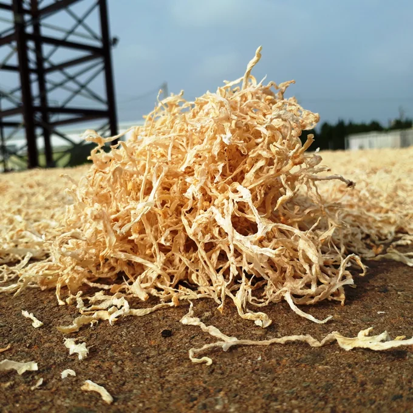
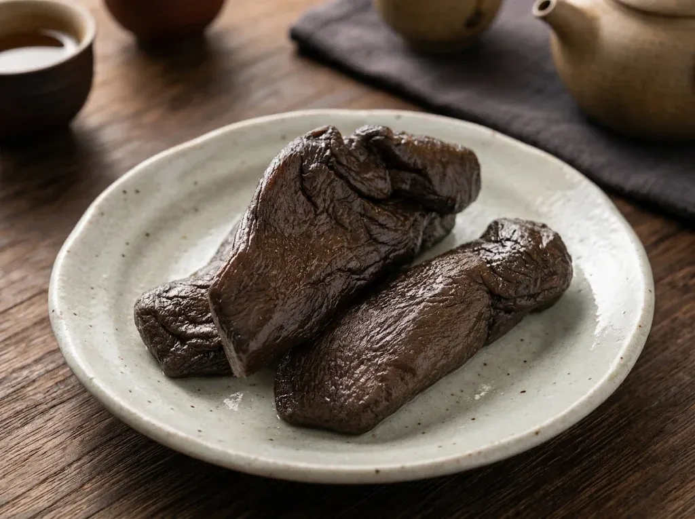

條仔脯
整條蘿蔔手選、鹽醃、反覆翻曬，適合煮湯與泡茶。
清水手工日曬菜脯
從各種大小的白蘿蔔裡，切出均勻又有口感的一條條。曬好的切脯，有鮮、有香，咬下去還有一點脆。

從田裡開始
大肚山清水一帶的紅土排水好。秋冬的白蘿蔔長得慢，甜度更足，纖維也比較紮實。即使切成條，經過粗鹽揉製和反覆醃曬，切脯仍有家常菜裡熟悉的爽脆口感。
手工製程
切脯有自己的一道手工切製。切好之後，醃製接著定下香氣；白天曬、晚上回缸，才把甕裡的滋味慢慢帶回每一條蘿蔔。
大大小小的蘿蔔都能用，帶傷或不好的地方會在切製前剔掉。
把蘿蔔切成像薯條的長條。每顆纖維的走向都不一樣，阿婆一條條看著紋路下刀；切錯方向，曬縮後容易薄得像紙。
用食品用粗鹽揉蘿蔔，讓它先出一部分水，也用這一輪的鹽汁搓洗，帶去表面雜質。這道叫殺青，第一輪的汁液會倒掉。
把蘿蔔放入大甕，上面壓大石頭，讓大部分汁液慢慢擠出，纖維也變得更柔韌。從這道壓醃開始，甕裡的汁液會留下。
把濕潤的蘿蔔移到曬埕，攤開讓陽光帶走水氣。曬過幾回，香氣才漸漸出來。
傍晚把蘿蔔壓回缸裡，讓纖維吸回前面留下的醃汁。
白天讓日頭蒸散水氣，晚上再回缸吸汁。醃汁的滋味，一回一回濃縮進蘿蔔裡。
切成條後，比整條蘿蔔容易醃透、曬透，通常數週就能收成，仍要看天氣與含水量、重量比例。
製程影片
菜脯埕原站的田間與製作紀錄。點選影片即可播放。
切脯製作時間較短，收成也較多。它的鮮味和香氣拿來做佐醬、炒菜、煎蛋都合適，切細後可以拌餡或當配料。
下次吃到爽脆的切脯，可想一想阿婆為什麼還是用手切。
整條蘿蔔手選、鹽醃、反覆翻曬，適合煮湯與泡茶。

秋冬白蘿蔔刨絲，不加鹽，靠風與日光留住鮮甜。

整條菜脯慢慢陳放，留下深厚醇香，適合煲湯。